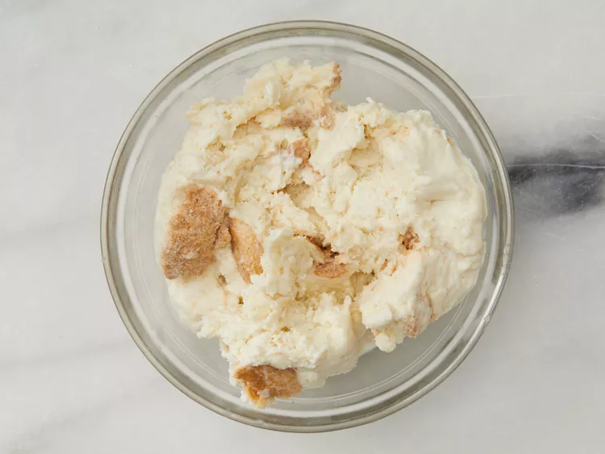
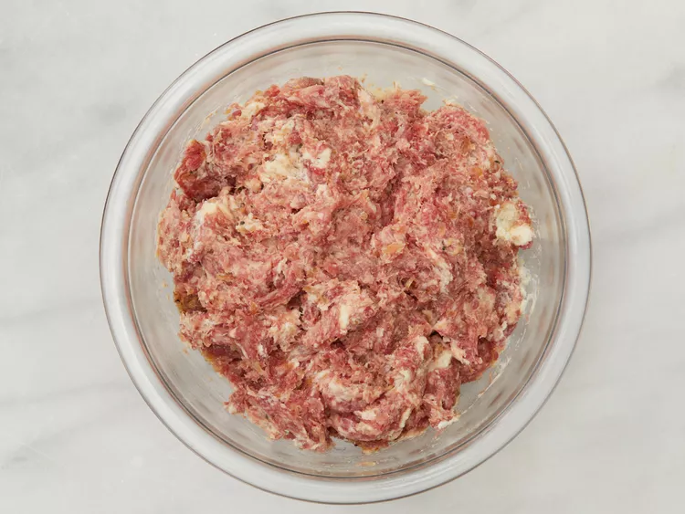
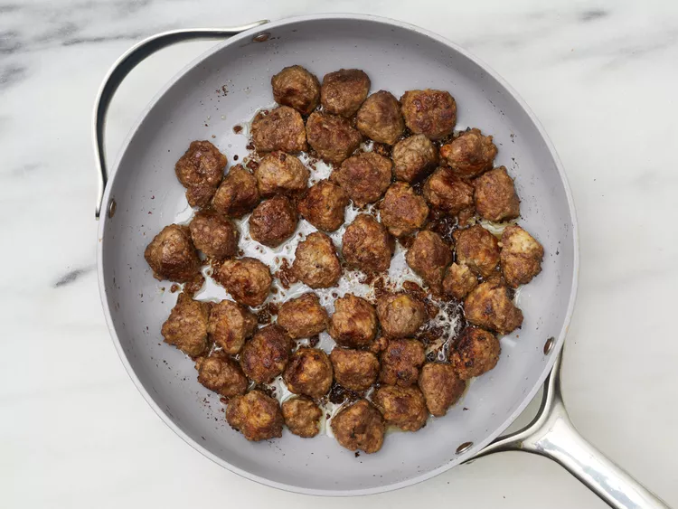
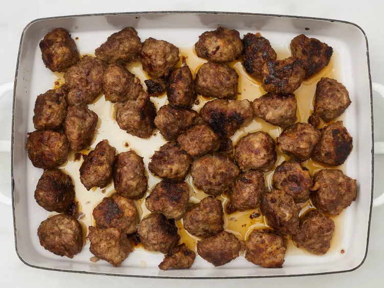
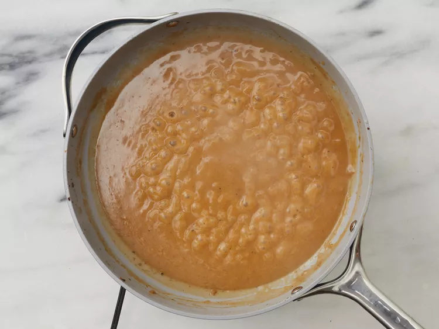

This Swedish meatball recipe is our family's Christmas tradition. We frequently
double the recipe and keep it warm in a slow cooker. Worth the effort, and the
meatballs are even better the next day! Reserve brown gravy and add sour cream
to it the day you serve the leftovers.
Ingrediants:
- 2 slices day-old white bread, crumbled
- ½ cup heavy cream
- 1 teaspoon butter
- 1 small onion, minced
- ⅔ pound ground beef
- 1 egg
- 1 tablespoon brown sugar (Optional)
- 1 teaspoon salt
- ¼ teaspoon ground black pepper
- ¼ teaspoon ground nutmeg
- ¼ teaspoon ground allspice
- ⅛ teaspoon ground ginger (Optional)
- 1 tablespoon butter
- ¼ cup chicken broth
- 3 tablespoons all-purpose flour, or as needed
- 2 cups beef broth, or as needed
- ½ (8 ounce) container sour cream
Directions:
st Step:
Preheat the oven to 350 degrees F (175 degrees C).
nd Step:
Place bread crumbs into a small bowl; mix in cream.
Allow to stand until crumbs absorb cream, about 10
minutes.

rd Step:
Meanwhile, melt 1 teaspoon butter in a skillet over
medium heat; cook and stir onion until light brown,
about 10 minutes. Transfer onion to a mixing bowl.
th Step:
Mix ground beef, ground pork, egg, brown sugar, salt,
black pepper, nutmeg, allspice, and ginger with onion
in the mixing bowl. Lightly mix in bread crumbs and cream.

th Step:
Melt 1 tablespoon butter in a large skillet over
medium heat. Pinch off about 1 1/2 tablespoon meat
mixture per meatball; form into balls. Place meatballs
into the skillet and cook, turning often, until browned,
about 5 minutes. Insides of meatballs will still be pink.

th Step:
Place browned meatballs into a baking dish, pour in
chicken broth, and cover with foil.
th Step:
Bake in the preheated oven until meatballs are tender,
about 40 minutes. Remove meatballs to a serving dish.

th Step:
Pour pan drippings into a saucepan over medium heat.
Whisk flour into drippings until smooth.
th Step:
Gradually whisk in enough beef broth to total about
2 1/2 cups liquid.
th Step:
Bring gravy to a simmer, whisking constantly, until
thickened, about 5 minutes.

th Step:
Just before serving, whisk in sour cream. Season with
salt and black pepper. Serve gravy with meatballs.